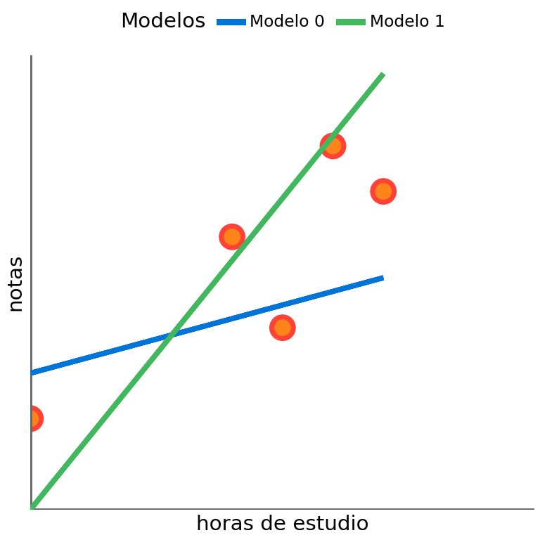
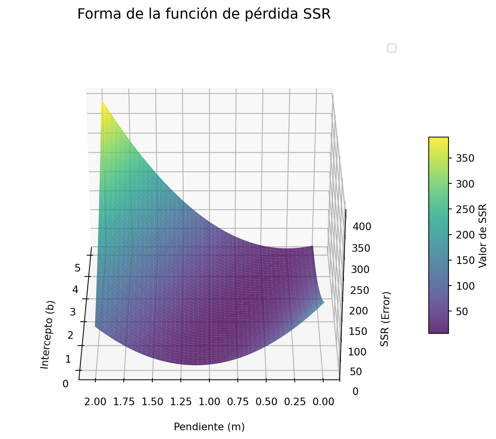
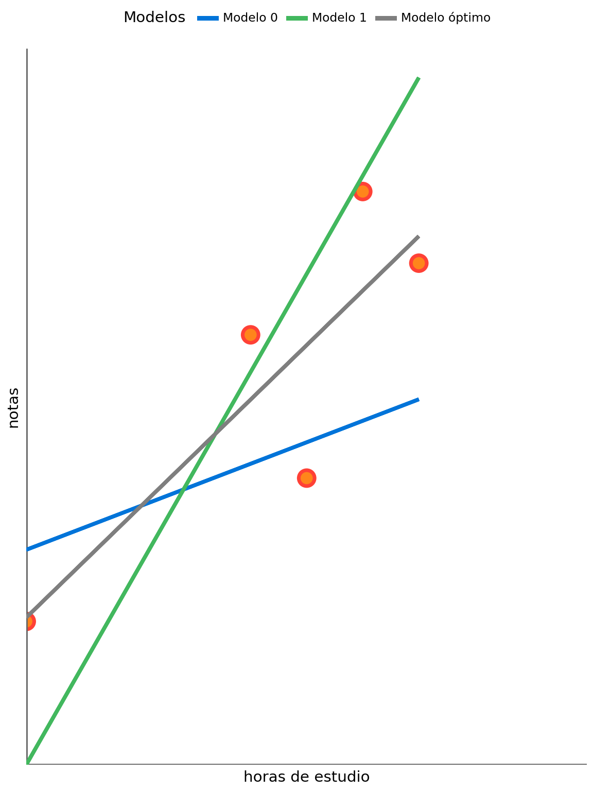
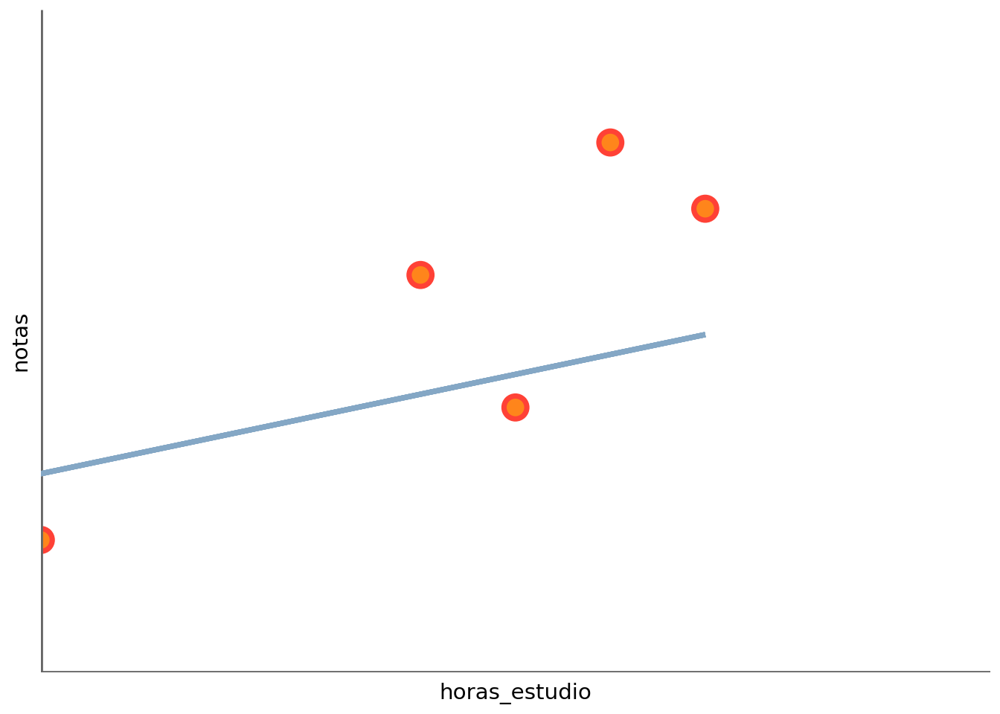
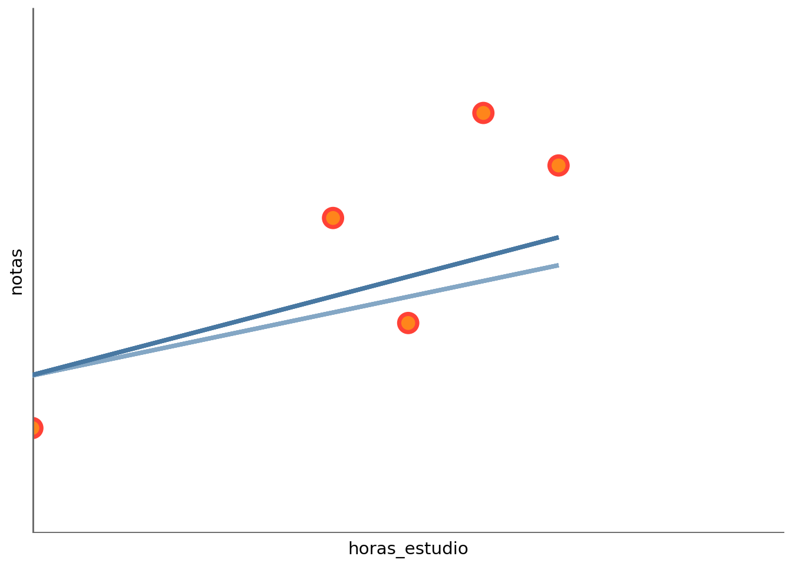
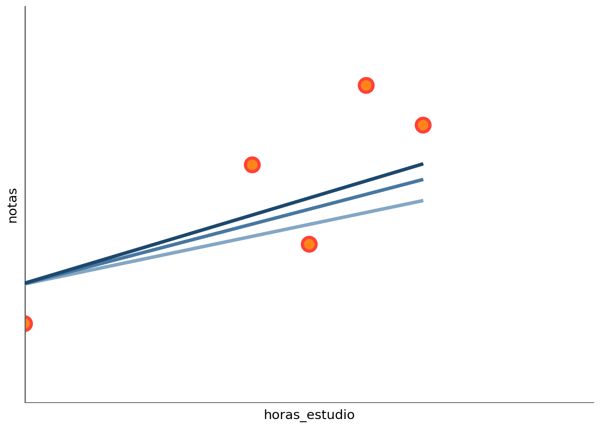
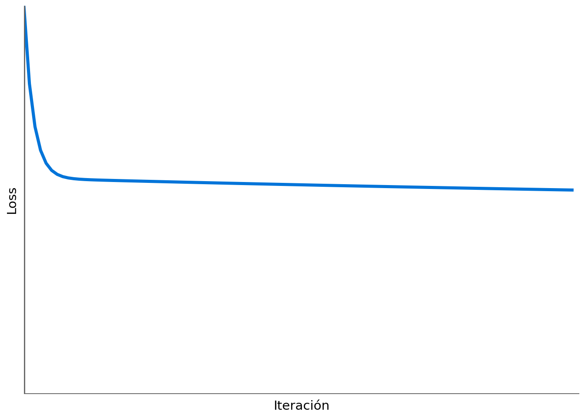
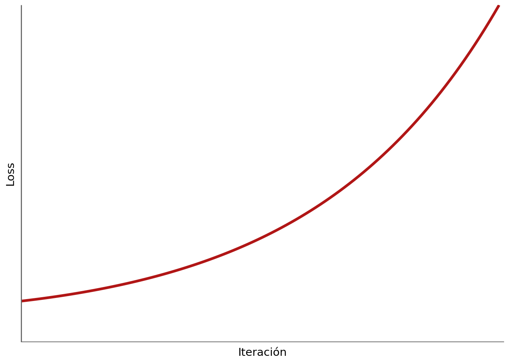

Haz clic para ver el código
%run ../common/data_science_imports.py
%run ../common/data_science_plots.py
%run ../common/data_science_df.pyEn la lección anterior, vimos que podemos utilizar distintos modelos para ajustar una función a un conjunto de datos. Se justificó que el modelo más sencillo es el lineal, ya que tiene menos parámetros y, por ello, es más fácil de interpretar. En esta lección, vamos a ver cómo se puede ajustar un modelo lineal a un conjunto de datos utilizando el método de mínimos cuadrados, que es el método más utilizado para ajustar modelos de regresión lineal. En este capítulo, nos centramos en modelos con una única variable explicativa estos modelos son conocidos como de regresión lineal simple. En el siguiente capítulo, veremos cómo ajustar modelos lineales con varias variables explicativas, conocidos como regresión lineal múltiple.
En el capítulo anterior vimos que, dados dos modelos, podemos calcular el error que comete cada uno de ellos en cada uno de los puntos de entrenamiento.
Así, partiendo del dataset de entrenamiento:
| horas_estudio | notas | |
|---|---|---|
| nombre | ||
| Leo | 0 | 2 |
| Sara | 5 | 4 |
| Javier | 4 | 6 |
| Elena | 6 | 8 |
| Marta | 7 | 7 |
Supongamos que tenemos dos modelos:
display(Markdown(
rf"""$$
\begin{{aligned}}
\text{{Modelo 0: }} y &= {b_0} + {m_0} \cdot x \\
\text{{Modelo 1: }} y &= {b_1} + {m_1} \cdot x
\end{{aligned}}
$$"""
))
p = (
ggplot(df, aes(x="horas_estudio", y="notas"))
+ custom_points()
+ clean_theme(xrange=(0, 10), yrange=(0, 10), xlabel="horas de estudio", ylabel="notas", xintercept=0, yintercept=0)
+ geom_segment(aes(color='"Modelo 0"', x=df["horas_estudio"].min(), xend=df["horas_estudio"].max(), y=linear_model(df["horas_estudio"].min(), b_0, m_0), yend=linear_model(df["horas_estudio"].max(), b_0, m_0)), size=1.5, show_legend=True)
+ geom_segment(aes(color='"Modelo 1"', x=df["horas_estudio"].min(), xend=df["horas_estudio"].max(), y=linear_model(df["horas_estudio"].min(), b_1, m_1), yend=linear_model(df["horas_estudio"].max(), b_1, m_1)), size=1.5, show_legend=True)
+ scale_color_manual(
values={
"Modelo 0": "#0074D9",
"Modelo 1": "#42b85e",
},
name="Modelos",
) + theme(
figure_size=(4, 4),
legend_position='top' # Opciones: 'right', 'left', 'top', 'bottom'
)
)
p\[ \begin{aligned} \text{Modelo 0: } y &= 3 + 0.3 \cdot x \\ \text{Modelo 1: } y &= 0 + 1.37 \cdot x \end{aligned} \]

Ninguno de los dos modelos parece particularmente bueno, pero, ¿cuál de los dos es mejor? Para responder a esta pregunta, vamos a calcular el error que comete cada modelo en cada punto de entrenamiento:
df["prediccion_modelo_0"] = df.apply(lambda row: linear_model(row["horas_estudio"], b_0, m_0), axis=1)
df["prediccion_modelo_1"] = df.apply(lambda row: linear_model(row["horas_estudio"], b_1, m_1), axis=1)
df["error_modelo_0"] = df["notas"] - df["prediccion_modelo_0"]
df["error_modelo_1"] = df["notas"] - df["prediccion_modelo_1"]
df| horas_estudio | notas | prediccion_modelo_0 | prediccion_modelo_1 | error_modelo_0 | error_modelo_1 | |
|---|---|---|---|---|---|---|
| nombre | ||||||
| Leo | 0 | 2 | 3.0 | 0.00 | -1.0 | 2.00 |
| Sara | 5 | 4 | 4.5 | 6.85 | -0.5 | -2.85 |
| Javier | 4 | 6 | 4.2 | 5.48 | 1.8 | 0.52 |
| Elena | 6 | 8 | 4.8 | 8.22 | 3.2 | -0.22 |
| Marta | 7 | 7 | 5.1 | 9.59 | 1.9 | -2.59 |
Para obtener el error total de cada modelo, podríamos sumar el error de cada punto. Sin embargo, como el error puede ser positivo o negativo, los errores de algunos puntos podrían anularse con los errores de otros puntos. Podemos evitar este problema con dos estrategias:
1.- Error absoluto: En este caso, el error total de cada modelo se calcula sumando el valor absoluto del error de cada punto.
2.- Error cuadrático: En este caso, el error total de cada modelo se calcula sumando el cuadrado del error de cada punto.
df["error_absoluto_modelo_0"] = df["error_modelo_0"].abs()
df["error_absoluto_modelo_1"] = df["error_modelo_1"].abs()
df["error_cuadratico_modelo_0"] = df["error_modelo_0"] ** 2
df["error_cuadratico_modelo_1"] = df["error_modelo_1"] ** 2
df[["error_absoluto_modelo_0", "error_absoluto_modelo_1", "error_cuadratico_modelo_0", "error_cuadratico_modelo_1"]]| error_absoluto_modelo_0 | error_absoluto_modelo_1 | error_cuadratico_modelo_0 | error_cuadratico_modelo_1 | |
|---|---|---|---|---|
| nombre | ||||
| Leo | 1.0 | 2.00 | 1.00 | 4.0000 |
| Sara | 0.5 | 2.85 | 0.25 | 8.1225 |
| Javier | 1.8 | 0.52 | 3.24 | 0.2704 |
| Elena | 3.2 | 0.22 | 10.24 | 0.0484 |
| Marta | 1.9 | 2.59 | 3.61 | 6.7081 |
Calculamos el error total de cada modelo con cada métrica:
| modelo | error_absoluto | error_cuadratico | |
|---|---|---|---|
| 0 | Modelo 0 | 8.40 | 18.3400 |
| 1 | Modelo 1 | 8.18 | 19.1494 |
Observe que cada modelo es mejor con una métrica diferente. Elevar los errores al cuadrado penaliza más los errores grandes. En la práctica, el error cuadrático es la métrica más utilizada para evaluar modelos de regresión. La razón es que tiene propiedades matemáticas y que facilitan la optimización del modelo. A la suma de los errores cuadrados se le llama suma de los errores cuadrados o SSR (por sus siglas en inglés) y matemáticamente se define:
\[ SSR = \sum_{i=1}^{n} (y_i - \hat{y}_i)^2 \]
Donde \(y_i\) es el valor real de la variable objetivo para el punto \(i\) e \(\hat{y}_i\) es el valor predicho por el modelo para el punto \(i\).
La esta función que mide los errores que ha cometido el modelo se llama función de pérdida. El objetivo de del entrenamiento es encontrar los parámetros del modelo (en este caso, \(b\) y \(m\)) que minimicen la función de pérdida (en este caso, la suma de los errores cuadrados).
Podemos representar gráficamente la función de pérdida en función de los parámetros del modelo para entender mejor la forma de la función de pérdida. La dificultad es que la función de pérdida depende de dos parámetros (\(b\) y \(m\)), con lo que no se puede representar en un gráfico bidimensional. Podemos representar la función de pérdida en un gráfico tridimensional, en el que los ejes \(x\) e \(y\) representen los parámetros del modelo (\(b\) y \(m\)) y el eje \(z\) represente el valor de la función de pérdida:
from mpl_toolkits.mplot3d import Axes3D
import numpy as np
import matplotlib.pyplot as plt
from mpl_toolkits.mplot3d import Axes3D
b_vals = np.linspace(0, 5, 50)
m_vals = np.linspace(0, 2, 50)
B, M = np.meshgrid(b_vals, m_vals)
SSR = np.zeros(B.shape)
for i in range(B.shape[0]):
for j in range(B.shape[1]):
predicciones = B[i, j] + M[i, j] * df["horas_estudio"]
SSR[i, j] = np.sum((df["notas"] - predicciones) ** 2)fig = plt.figure(figsize=(10, 7))
ax = fig.add_subplot(111, projection='3d')
superficie = ax.plot_surface(B, M, SSR, cmap='viridis', edgecolor='none', alpha=0.8)
ax.set_xlabel('Intercepto (b)', labelpad=10)
ax.set_ylabel('Pendiente (m)', labelpad=10)
ax.set_zlabel('SSR (Error)', labelpad=10)
ax.set_title('Forma de la función de pérdida SSR', fontsize=14, pad=20)
fig.colorbar(superficie, ax=ax, shrink=0.5, aspect=10, label='Valor de SSR')
ax.legend()
ax.view_init(elev=30, azim=180)
plt.show()
En el gráfico anterior, se observa que la función de pérdida tiene forma parabólica y, por lo tanto, tiene un único mínimo global. Esto mismo lo podríamos haber deducido sin necesidad de representar la función de pérdida ya que, al ser cuadrática y siempre positiva, tiene que tener un único mínimo global.
Para obtener el mínimo global, como se explica en el apéndice de derivadas, podemos calcular las derivadas parciales de la función de pérdida con respecto a cada uno de los parámetros del modelo, igualarlas a cero y resolver el sistema de ecuaciones resultante. En este caso, las derivadas parciales de la función de pérdida con respecto a \(b\) y \(m\) son:
\[ \begin{aligned} \frac{\partial SSR}{\partial b} &= -2 \sum_{i=1}^{n} (y_i - (b + m x_i)) = 0 \\ \frac{\partial SSR}{\partial m} &= -2 \sum_{i=1}^{n} x_i (y_i - (b + m x_i)) = 0 \end{aligned} \]
Con un poco de cacharreo matemático, se puede demostrar que la solución de este sistema de ecuaciones es:
\[ \begin{aligned} b &= \bar{y} - m \bar{x} \\ m &= \frac{\sum_{i=1}^{n} (x_i - \bar{x})(y_i - \bar{y})}{\sum_{i=1}^{n} (x_i - \bar{x})^2} \end{aligned} \]
Donde \(\bar{x}\) y \(\bar{y}\) son la media de las variables \(x\) e \(y\), respectivamente. En nuestro ejemplo \(x\) es son las horas de estudio e \(y\) es la nota. Por lo tanto, el modelo lineal que minimiza la función de pérdida es:
El resultado de aplicar esta fórmula a nuestro dataset es:
b: 2.05, m: 0.76
SSR: 6.32Como cabría esperar, vemos que la función de pérdida es menor para el modelo que hemos calculado que para los modelos anteriores. Podemos representar el modelo que hemos calculado en el gráfico para ver cómo se ajusta a los datos:
p + geom_segment(aes(color='"Modelo óptimo"', x=df["horas_estudio"].min(), xend=df["horas_estudio"].max(), y=b_hat + m_hat * df["horas_estudio"].min(), yend=b_hat + m_hat * df["horas_estudio"].max()), size=1.5, show_legend=True) + theme(
figure_size=(6, 8),
legend_position='top' # Opciones: 'right', 'left', 'top', 'bottom'
)
Aunque el método de las derivadas es el método más directo para encontrar el mínimo de la función de pérdida, en algunos casos no es posible resolver el sistema de ecuaciones resultante. Esto puede ocurrir, por ejemplo, cuando la función de pérdida es muy compleja o cuando el número de parámetros del modelo es muy grande. En estos casos, podemos utilizar un método numérico llamado descenso de gradiente para encontrar una aproximación al mínimo de la función de pérdida.
En primer lugar tenemos definir que el gradiente de un función:
El gradiente de una función es un vector que contiene las derivadas parciales de la función con respecto a cada uno de sus parámetros. El gradiente indica la dirección en la que la función aumenta más rápidamente. Por lo tanto, si queremos minimizar la función, debemos movernos en la dirección opuesta al gradiente.
El algoritmo de descenso de gradiente consiste en iterativamente actualizar los parámetros del modelo en la dirección opuesta al gradiente de la función de pérdida con respecto a los parámetros del modelo. La actualización se realiza con la siguiente fórmula:
\[ \boldsymbol{\theta} = \boldsymbol{\theta} - \alpha \nabla L(\boldsymbol{\theta}) \]
Donde:
Un hiperparámetro es un parámetro del modelo que no se aprende durante el proceso de entrenamiento, sino que se establece antes de comenzar el entrenamiento. La tasa de aprendizaje \(\alpha\) es un ejemplo de hiperparámetro. La elección de un valor adecuado para \(\alpha\) es crucial para el éxito del algoritmo de descenso de gradiente. Si \(\alpha\) es demasiado pequeño, el algoritmo puede tardar mucho tiempo en converger al mínimo de la función de pérdida. Si \(\alpha\) es demasiado grande, el algoritmo puede divergir y no encontrar el mínimo de la función de pérdida.
El algoritmo de descenso de gradiente se puede resumir en los siguientes pasos:
Vamos a explicar el algoritmo de descenso de gradiente paso a paso. Supongamos que arbitrariamente inicializamos los parámetros del modelo con los valores b=3 y m=0.3. Representamos el modelo con estos parámetros en el gráfico:
p = (
ggplot(df, aes(x="horas_estudio", y="notas"))
+ custom_points()
+ clean_theme(xrange=(0, 10), yrange=(0, 10), xlabel="horas_estudio", ylabel="notas", xintercept=0, yintercept=0)
+ geom_segment(aes( x=df["horas_estudio"].min(), xend=df["horas_estudio"].max(), y=linear_model(df["horas_estudio"].min(), b_0, m_0), yend=linear_model(df["horas_estudio"].max(), b_0, m_0)), size=1.5, color='#84a7c5')
)
p
La función de pérdida para el modelo con los parámetros iniciales es:
El primer paso del algoritmo es calcular el gradiente de la función de pérdida con respecto a los parámetros del modelo. Para ello, usamos las derivadas parciales de la función de pérdida con respecto a \(b\) y \(m\) mostradas anteriormente:
Gradiente con respecto a b: -10.80
Gradiente con respecto a m: -74.40Definimos una tasa de aprendizaje \(\alpha\) (por ejemplo 0.001) y actualizamos los parámetros del modelo utilizando la fórmula de actualización.
b actualizado: 3.01, m actualizado : 0.37Mostramos el modelo con los parámetros actualizados en el gráfico:

Vemos que el modelo con los parámetros actualizados se ajusta mejor a los datos que el modelo con los parámetros iniciales. Calculamos la función de pérdida para el modelo con los parámetros actualizados y comprobamos que es menor que la anterior:
Hagamos una segunda iteración del algoritmo de descenso de gradiente para ver cómo se va ajustando el modelo a los datos:
b actualizado: 3.02, m actualizado : 0.43Mostramos el modelo con los parámetros actualizados en el gráfico:

Calculamos nuevamente la función de pérdida:
Podemos programar un bucle para iterar el algoritmo de descenso de gradiente hasta que se alcance un criterio de parada:
Iteración 0: b=3.01, m=0.37, SSR=13.4214
Iteración 100: b=2.85, m=0.62, SSR=7.0508
Iteración 200: b=2.69, m=0.65, SSR=6.7866
Iteración 300: b=2.56, m=0.67, SSR=6.6181
Iteración 400: b=2.46, m=0.69, SSR=6.5108
Iteración 500: b=2.38, m=0.70, SSR=6.4423
Iteración 600: b=2.31, m=0.71, SSR=6.3987
Iteración 700: b=2.26, m=0.72, SSR=6.3709
Iteración 800: b=2.22, m=0.73, SSR=6.3531
Iteración 900: b=2.19, m=0.74, SSR=6.3418
Iteración 1000: b=2.16, m=0.74, SSR=6.3346Observamos que el algoritmo de descenso de gradiente prácticamente ha convergido y que los parámetros están casi en los valores óptimos que habíamos calculado analíticamente.
Podemos mostrar gráficamente cómo ha evolucionado la función de pérdida a lo largo de las iteraciones:

El valor de la tasa de aprendizaje \(\alpha\) que hemos utilizado ha permitido converger al algoritmo. Pero comprobemos qué ocurre si utilizamos un valor de \(\alpha\) más pequeño:
Iteración 0: b=3.00, m=0.31, SSR=17.7821
Iteración 100: b=3.02, m=0.57, SSR=7.4727
Iteración 200: b=3.01, m=0.59, SSR=7.3713
Iteración 300: b=2.99, m=0.60, SSR=7.3249
Iteración 400: b=2.96, m=0.60, SSR=7.2808
Iteración 500: b=2.94, m=0.60, SSR=7.2387
Iteración 600: b=2.92, m=0.61, SSR=7.1983
Iteración 700: b=2.91, m=0.61, SSR=7.1598
Iteración 800: b=2.89, m=0.61, SSR=7.1230
Iteración 900: b=2.87, m=0.62, SSR=7.0877
Iteración 1000: b=2.85, m=0.62, SSR=7.0541En este caso, el algoritmo de descenso de gradiente tarda mucho más en converger al mínimo de la función de pérdida. De hecho, después de 1000 iteraciones, el valor de la función de pérdida sigue siendo muy alto.
Podríamos tener la tentación de aumentar el valor de \(\alpha\) para acelerar la convergencia, pero si lo hacemos, corremos el riesgo de que el algoritmo diverja y no encuentre el mínimo de la función de pérdida. Por ejemplo, si utilizamos un valor de \(\alpha\) demasiado grande:
Iteración 0: b=3.08, m=0.88, SSR=18.5864
Iteración 100: b=2.41, m=1.79, SSR=156.2810
Iteración 200: b=2.77, m=4.63, SSR=2021.2266
Iteración 300: b=4.57, m=14.98, SSR=27085.2315
Iteración 400: b=11.24, m=52.89, SSR=363928.0974
Iteración 500: b=35.72, m=191.87, SSR=4890862.7451
Iteración 600: b=125.49, m=701.38, SSR=65729726.7221
Iteración 700: b=454.55, m=2569.19, SSR=883361890.2176
Iteración 800: b=1660.88, m=9416.54, SSR=11871771454.1391
Iteración 900: b=6083.25, m=34518.69, SSR=159548379757.1609
Iteración 1000: b=22295.51, m=126542.32, SSR=2144219638415.7515En este caso, el algoritmo de descenso de gradiente diverge y no encuentra el mínimo de la función de pérdida. De hecho, después de 1000 iteraciones, el valor de la función de pérdida es extremadamente alto.
Gráficamente:

El siguiente código muestra cómo implementar el algoritmo de descenso de gradiente utilizando la librería Pytorch. En este caso, utilizamos tensores de Pytorch para representar los parámetros del modelo y los datos de entrenamiento, y utilizamos la función backward() para calcular el gradiente de la función de pérdida con respecto a los parámetros del modelo. Observamos que el resultado es similar al que hemos obtenido con la implementación manual del algoritmo de descenso de gradiente.
import torch
b = torch.tensor(float(b_0), requires_grad=True)
m = torch.tensor(float(m_0), requires_grad=True)
x = torch.tensor(df["horas_estudio"].values, dtype=torch.float32)
y = torch.tensor(df["notas"].values, dtype=torch.float32)
def ssr_torch(b, m, x, y):
y_pred = b + m * x
return torch.sum((y - y_pred) ** 2)
alpha = 0.001
for i in range(0, 1001):
loss = ssr_torch(b, m, x, y)
loss.backward()
with torch.no_grad():
b -= alpha * b.grad
m -= alpha * m.grad
b.grad.zero_()
m.grad.zero_()
if i % 100 == 0:
print(f"Iteración {i}: b={b.item():.2f}, m={m.item():.2f}, SSR={loss.item():.4f}")Iteración 0: b=3.01, m=0.37, SSR=18.3400
Iteración 100: b=2.85, m=0.62, SSR=7.0540
Iteración 200: b=2.69, m=0.65, SSR=6.7887
Iteración 300: b=2.56, m=0.67, SSR=6.6195
Iteración 400: b=2.46, m=0.69, SSR=6.5116
Iteración 500: b=2.38, m=0.70, SSR=6.4429
Iteración 600: b=2.31, m=0.71, SSR=6.3990
Iteración 700: b=2.26, m=0.72, SSR=6.3711
Iteración 800: b=2.22, m=0.73, SSR=6.3533
Iteración 900: b=2.19, m=0.74, SSR=6.3419
Iteración 1000: b=2.16, m=0.74, SSR=6.3347En Pytorch, también podemos utilizar optimizadores predefinidos para realizar el descenso de gradiente de manera más sencilla. Por ejemplo, podemos utilizar el optimizador SGD (Stochastic Gradient Descent) de Pytorch para actualizar los parámetros del modelo:
import torch
import torch.optim as optim
b = torch.tensor(float(b_0), requires_grad=True)
m = torch.tensor(float(m_0), requires_grad=True)
x = torch.tensor(df["horas_estudio"].values, dtype=torch.float32)
y = torch.tensor(df["notas"].values, dtype=torch.float32)
def ssr_torch(b, m, x, y):
y_pred = b + m * x
return torch.sum((y - y_pred) ** 2)
optimizer = optim.SGD([b, m], lr=alpha)
for i in range(0, 1001):
optimizer.zero_grad()
loss = ssr_torch(b, m, x, y)
loss.backward()
optimizer.step()
if i % 100 == 0:
print(f"Iteración {i}: b={b.item():.2f}, m={m.item():.2f}, SSR={loss.item():.4f}")Iteración 0: b=3.01, m=0.37, SSR=18.3400
Iteración 100: b=2.85, m=0.62, SSR=7.0540
Iteración 200: b=2.69, m=0.65, SSR=6.7887
Iteración 300: b=2.56, m=0.67, SSR=6.6195
Iteración 400: b=2.46, m=0.69, SSR=6.5116
Iteración 500: b=2.38, m=0.70, SSR=6.4429
Iteración 600: b=2.31, m=0.71, SSR=6.3990
Iteración 700: b=2.26, m=0.72, SSR=6.3711
Iteración 800: b=2.22, m=0.73, SSR=6.3533
Iteración 900: b=2.19, m=0.74, SSR=6.3419
Iteración 1000: b=2.16, m=0.74, SSR=6.3347Pytorch tiene funciones de pérdida predefinidas que podemos utilizar para calcular la función de pérdida de manera más sencilla. Por ejemplo, podemos utilizar la función MSELoss (Mean Squared Error Loss) de Pytorch para calcular la función de pérdida de regresión:
La función MSELoss de Pytorch calcula el error cuadrático medio entre las predicciones del modelo y los valores reales. Es decir, calcula la media de los errores cuadrados de cada punto de entrenamiento. La fórmula matemática de la función MSELoss es:
\[ MSE = \frac{SSR}{N} \]
Donde \(N\) es el número de puntos de entrenamiento.
Podemos usar la librería tqdm para mostrar una barra de progreso durante el entrenamiento del modelo si lo ejecutamos en un entorno que lo soporte (como Jupyter Notebook o Google Colab):
import torch
import torch.optim as optim
import torch.nn as nn
from tqdm.notebook import tqdm
b = torch.tensor(float(b_0), requires_grad=True)
m = torch.tensor(float(m_0), requires_grad=True)
x = torch.tensor(df["horas_estudio"].values, dtype=torch.float32)
y = torch.tensor(df["notas"].values, dtype=torch.float32)
def linear_model_torch(b, m, x):
return b + m * x
criterion = nn.MSELoss()
optimizer = optim.SGD([b, m], lr=alpha)
# El resto del código se queda exactamente igual
pbar = tqdm(range(0, 1000), desc="Entrenando Modelo")
for i in pbar:
optimizer.zero_grad()
y_pred = linear_model_torch(b, m, x)
loss = criterion(y_pred, y) # Calculamos la función de pérdida utilizando la función MSELoss de Pytorch
loss.backward() # Calculamos el gradiente de la función de pérdida con respecto a los parámetros del modelo
optimizer.step() # Actualizamos los parámetros del modelo utilizando el optimizador
pbar.set_postfix({
"b": f"{b.item():.2f}",
"m": f"{m.item():.2f}",
"MSE": f"{loss.item():.4f}"
})En Pytorch, también podemos crear modelos de manera más sencilla utilizando la clase nn.Module. Por ejemplo, podríamos crear una clase LinearRegression que herede de nn.Module y que tenga un método forward que calcule las predicciones del modelo:
Para entrenar el modelo, simplemente tenemos que crear una instancia de la clase LinearRegression y utilizar el mismo código que hemos utilizado anteriormente para entrenar el modelo:
model = LinearRegression()
criterion = nn.MSELoss()
optimizer = optim.SGD(model.parameters(), lr=alpha)
for i in range(0, 1001):
optimizer.zero_grad()
y_pred = model(x)
loss = criterion(y_pred, y)
loss.backward()
optimizer.step()
if i % 100 == 0:
print(f"Iteración {i}: b={model.b.item():.2f}, m={model.m.item():.2f}, MSE={loss.item():.4f}")Iteración 0: b=3.00, m=0.31, MSE=3.6680
Iteración 100: b=3.01, m=0.59, MSE=1.4744
Iteración 200: b=2.96, m=0.60, MSE=1.4562
Iteración 300: b=2.92, m=0.61, MSE=1.4397
Iteración 400: b=2.89, m=0.61, MSE=1.4247
Iteración 500: b=2.85, m=0.62, MSE=1.4109
Iteración 600: b=2.81, m=0.63, MSE=1.3983
Iteración 700: b=2.78, m=0.63, MSE=1.3867
Iteración 800: b=2.75, m=0.64, MSE=1.3762
Iteración 900: b=2.72, m=0.64, MSE=1.3666
Iteración 1000: b=2.69, m=0.65, MSE=1.3578Todavía se puede simplificar aún más el código utilizando la clase nn.Linear de Pytorch, que implementa una capa lineal con un solo nodo de salida. En este caso, no necesitamos definir los parámetros del modelo manualmente, ya que la clase nn.Linear se encarga de ello automáticamente:
import torch
import torch.nn as nn
import torch.optim as optim
model = nn.Linear(1, 1) # Capa lineal con 1 nodo de entrada y 1 nodo de salida
criterion = nn.MSELoss()
optimizer = optim.SGD(model.parameters(), lr=alpha)
x = x.view(-1, 1) # Reshape de x para que tenga la forma (n_samples, n_features)
y = y.view(-1, 1) # Reshape de y para que tenga la forma (n_samples, n_targets)
for i in range(0, 1001):
optimizer.zero_grad()
y_pred = model(x)
loss = criterion(y_pred, y)
loss.backward()
optimizer.step()
if i % 100 == 0:
b = model.bias.item()
m = model.weight.item()
print(f"Iteración {i}: b={b:.2f}, m={m:.2f}, MSE={loss.item():.4f}")Iteración 0: b=0.11, m=-0.68, MSE=90.6472
Iteración 100: b=0.49, m=1.03, MSE=1.8358
Iteración 200: b=0.56, m=1.02, MSE=1.7847
Iteración 300: b=0.62, m=1.01, MSE=1.7400
Iteración 400: b=0.69, m=1.00, MSE=1.6991
Iteración 500: b=0.75, m=0.99, MSE=1.6617
Iteración 600: b=0.80, m=0.98, MSE=1.6275
Iteración 700: b=0.86, m=0.97, MSE=1.5963
Iteración 800: b=0.91, m=0.96, MSE=1.5677
Iteración 900: b=0.96, m=0.95, MSE=1.5416
Iteración 1000: b=1.01, m=0.94, MSE=1.5178